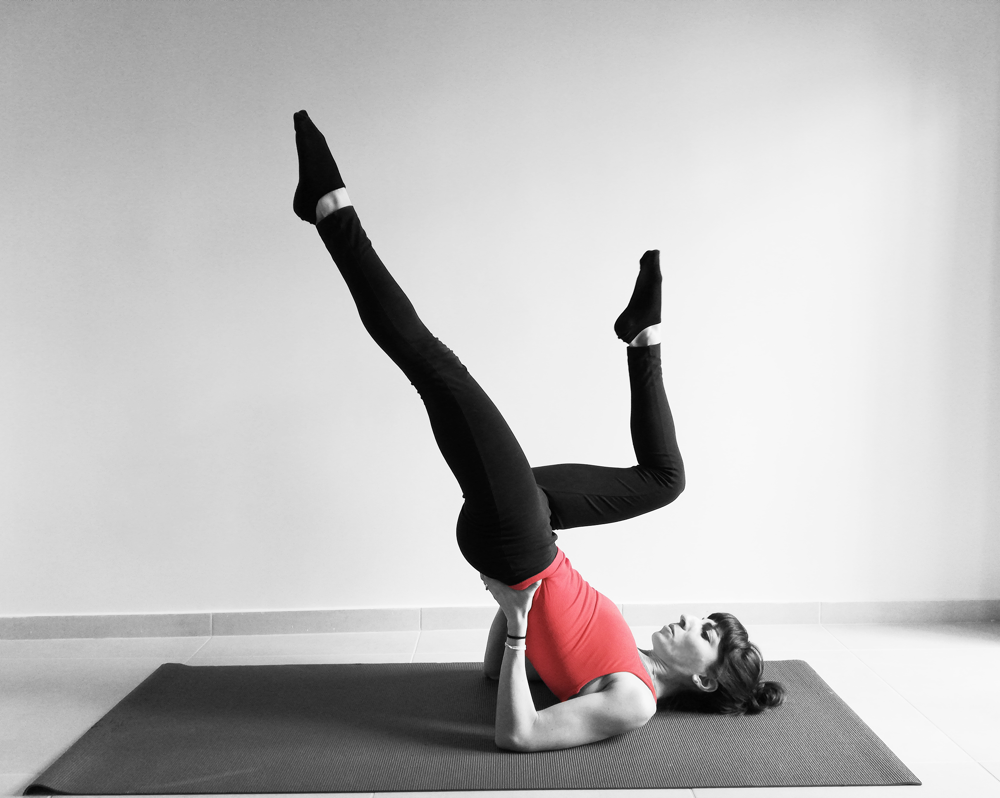

Personal Trainer
Pilates Instructor
Exercise Nutritionist
I love movement and I am a big believer that being active can make you feel happier and healthier. This is my personal space, where I will share with you my passion about exercise, tell you all the tricks for being able to move freely and without pain and share with you all the bibs and bobs about a healthy lifestyle. My approach as a fitness professional is to set goals and get results and I will go above and beyond to help you meet your fitness goals.
I am a Certified Personal Trainer and Pilates Teacher. Soon after finishing my studies in Sports Science and Physical Education, I completed a Master’s degree in Nutrition and Dietetics. I am very passionate about improving overall well-being, through the combination of nutrition and exercise. I find what the human body is capable of fascinating and it is amazing how it can be transformed through physical exercise.
A keen swimmer and athlete from childhood, I started ballet classes when I was 3 years old and then did rhythmic gymnastics up until the start of my undergraduate studies, when I discovered and quickly fell in love with Pilates. I hold qualifications across the full suite of Pilates equipment, including Mat, Reformer, Tower, Cadillac, Wunda Chair, and Ladder Barrel. I have experience working in rehabilitation, populations with restrictions and I am pre/postnatal certified.
For the past 10 years, I have been working at some of Athens’ and London’s leading private gym clubs and Pilates studios, while also creating bespoke training routines and coaching individuals on how to formulate nutrition plans that fit their lifestyle.
I love movement and I am a big believer that being active can make you feel happier and healthier.
"I started working with Maria as a beginner with limited abilities a few years ago . since then she helped me build up my strength , my posture and increase my mobility. She challenged me to try new things and gain confidence while still keeping our sessions fun and enjoyable."Sarah R.
"What can I say - Maria is simply the best! I would say I am a challenging client - having started out with no physical fitness at all, via some sports injuries and most recently a total knee replacement - but whatever new change happens to me, Maria can adapt and tailor her PTs to what I need and continue my fitness journey - even just a couple of weeks post op!
When for a variety of reasons, I have not been able to work with Maria for a period of time, my body knows it and then when I am back for a few sessions, I feel the improvement all over. Right from my very first session in a reformer class with Maria, I was made to feel welcome and empowered - for someone who had avoided school PE and any form of fitness for over 30 years that was no mean feat - and as my fitness has grown (I did a half marathon after a couple of years of working with Maria), Maria has been able to tailor my programme both with in person sessions and more recently during COVID 19 times via Zoom to adapt to my progress - knowing exactly how much to push to progress but never enough to fail. My sessions with Maria get priority in my busy diary now!"Laura M.
"Maria is an excellent Pilates teacher and personal trainer and I recommend her wholeheartedly. I started working with Maria almost four years ago following two back injuries that I suffered in the gym. My back pain reduced only after a few weeks of working with Maria and having continued over the last four years, I am now stronger, more flexible, leaner and have better posture then when I was in my 20s. What makes Maria unique is her combination of very strong academic preparation in exercise science and physiology, her passion for Pilates, and her ability to transmit that knowledge and passion in a very clear and understandable manner. I enjoy working with Maria so much that, even though we no longer live in the same country, I still see her multiple times a week for online Pilates lessons. I cannot recommend Maria highly enough."Andrew B.
I am a Certified Personal Trainer and Pilates Teacher. Soon after finishing my studies in Sports Science and Physical Education, I completed a Master’s degree in Nutrition and Dietetics.
Feel free to send me a message using the contact form below and I will get back to you as soon as possible. Please note that the form will be launching your default email app to send the message.
Alternatively, you can use any of the other media listed below to get in touch.
{kind=link}
{kind=link}
{kind=link}
{kind=link}